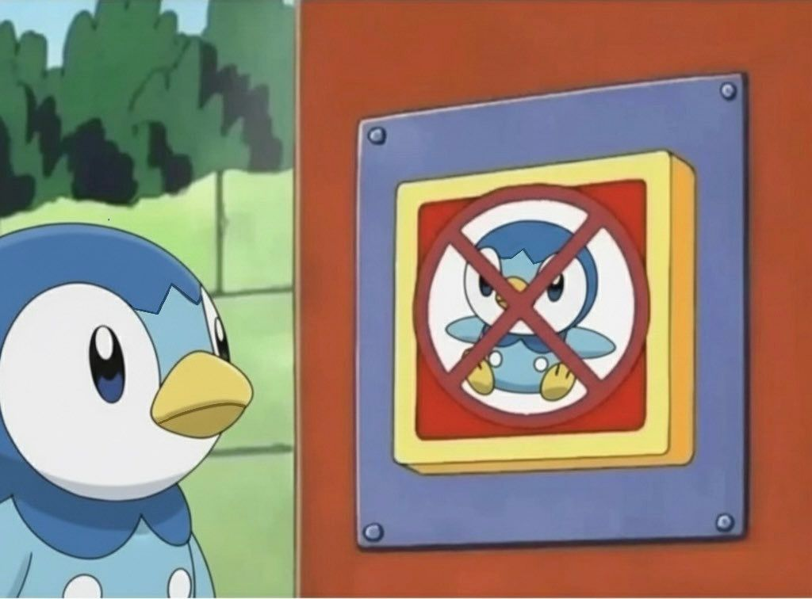
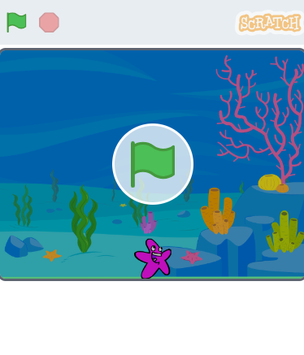
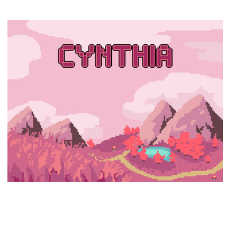
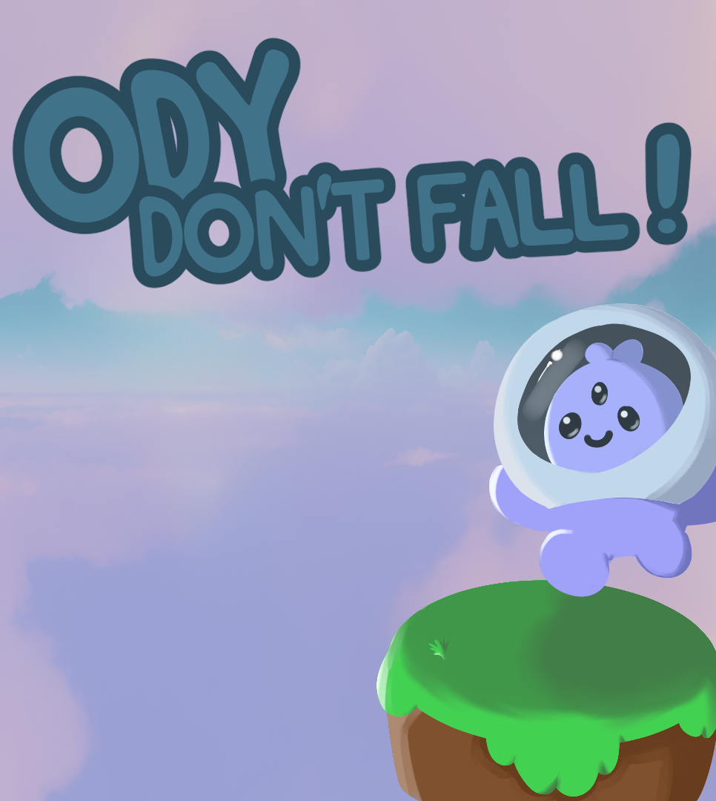
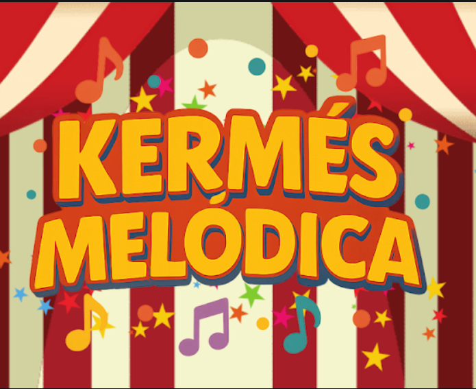
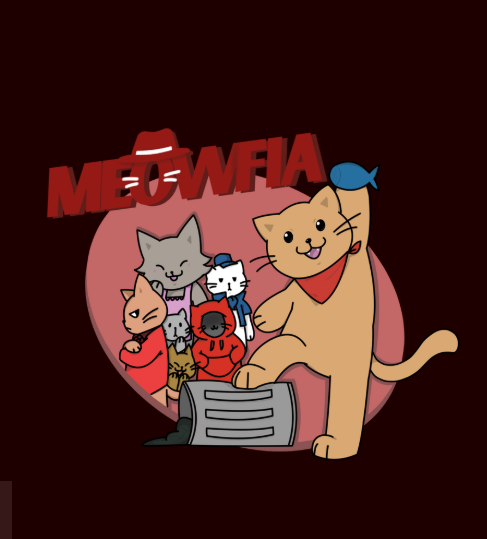
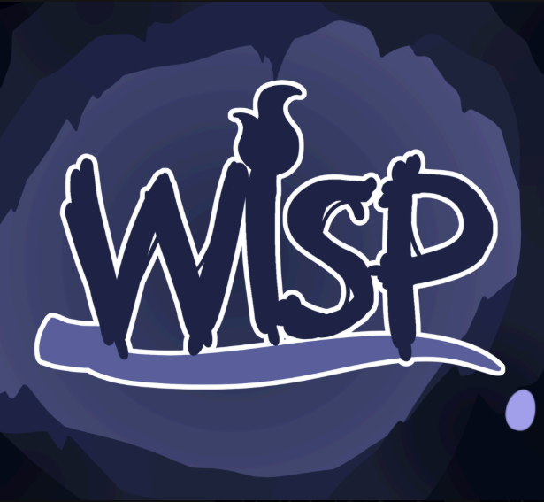

Ángeles Sosa
Soy estudiante de la Licenciatura en Desarrollo y Producción de Videojuegos en la Universidad Nacional de José C. Paz. Realizo proyectos independientes, pero sobre todo en conjunto con mi equipo de desarrollo de videojuegos llamado "La Vaca Espacial".

Sobre mí
Me especializo en la parte artística de los videojuegos, creando assets y elementos visuales que enriquecen la experiencia del jugador. También me encuentro incursionando en la programación de videojuegos, aprendiendo a utilizar motores de desarrollo como Godot para dar vida a ideas y proyectos.
Mis proyectos
En este apartado se encuentran los proyectos realizados durante la cursada de Fundamentos de la Programación I. También se encuentran proyectos realizados en conjunto con el estudio "La Vaca Espacial".
- Todos
- Scratch
- RPG Paper Maker
- Godot Engine
- La Vaca Espacial

La Cena de Patricio
Pequeño proyecto realizado en Scratch, donde el objetivo es ayudar a Patricio a conseguir su cena evitando los obstáculos que se le presentan.
Jugar
CYNTHIA
Videojuego de tipo RPG desarrollado en RPG PaperMaker, donde el objetivo es ayudar a Cynthia a escapar de un mundo lleno de peligros y enemigos.
Jugar
Ody Don't Fall!
Plataformero en 3D desarrollado en Godot Engine, donde el objetivo es completar el pedestal de planetas para poder escapar del espacio hacia la tierra.
Jugar
Kermés Melódica
Prototipo para la materia "Diseño Lúdico II". Juego de ritmo inspirado en una feria y los juegos que se pueden encontrar en ella.
Jugar
Meowfia
Juego de exploración y misterio desarrollado en Godot, acompañas a un gato a ganarse la confianza de la mafia gatuna para salir de la pobreza y obtener beneficios en base a los recados cumplidos.
Jugar
Wisp
Juego desarrollado para móviles en Godot. WISP es un juego de plataformas en caída vertical donde el objetivo es pelear con los monstruos para liberar a su padre del mal.
Jugar